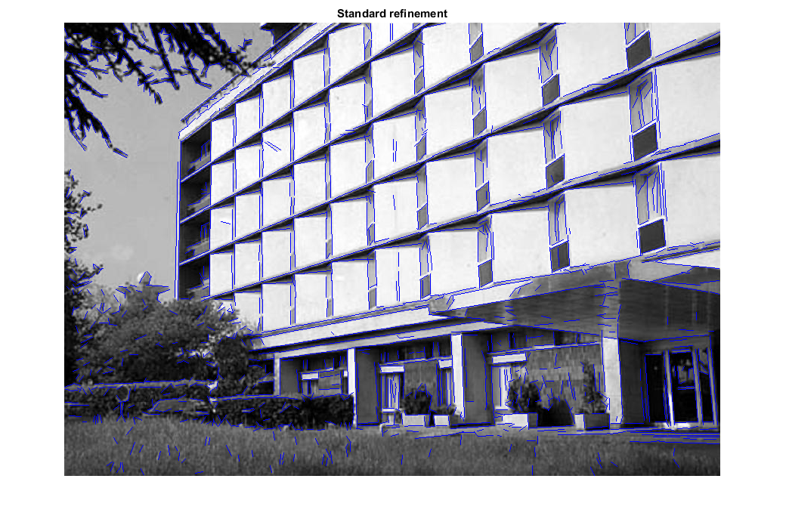
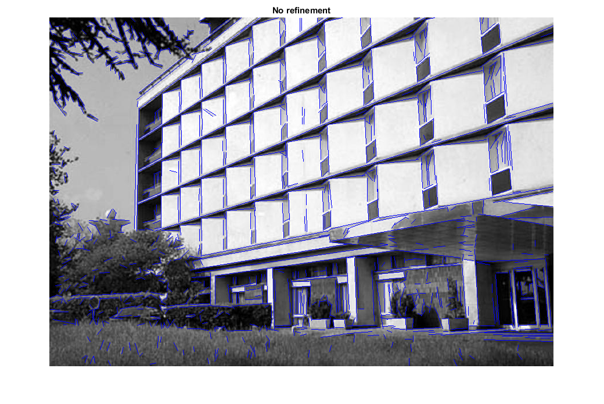
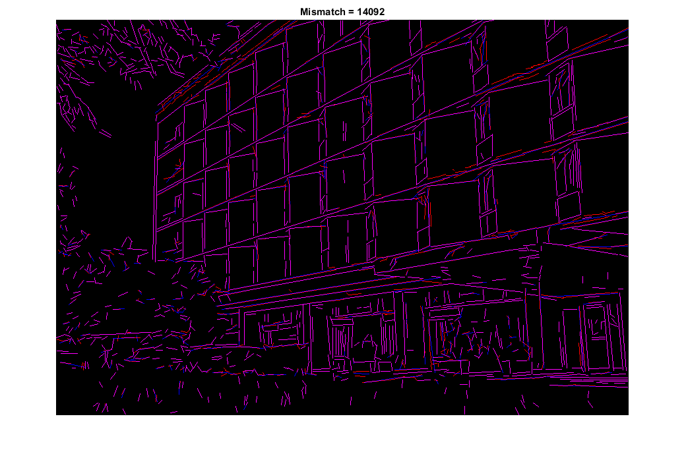

Line Segment Detector demo
An example using the cv.LineSegmentDetector class.
Sources:
Contents
Input image
img = cv.imread(fullfile(mexopencv.root(),'test','building.jpg'), 'Grayscale',true);
Preprocess
Apply canny edge detector
if false img = cv.Canny(img, [50 200], 'ApertureSize',5); end
LSD detectors
Create two LSD detectors with standard and no refinement.
lsd1 = cv.LineSegmentDetector('Refine','Standard'); lsd2 = cv.LineSegmentDetector('Refine','None');
Detect the lines both ways
tic, lines1 = lsd1.detect(img); toc tic, lines2 = lsd2.detect(img); toc
Elapsed time is 0.102855 seconds. Elapsed time is 0.037938 seconds.
Result 1
Show found lines with standard refinement
drawnLines1 = lsd1.drawSegments(img, lines1);
imshow(drawnLines1), title('Standard refinement')Result 2
Show found lines with no refinement
drawnLines2 = lsd2.drawSegments(img, lines2);
imshow(drawnLines2), title('No refinement')Compare
[h,w,~] = size(img);
[comparison,mis_count] = lsd1.compareSegments([w,h], lines1, lines2);
imshow(comparison), title(sprintf('Mismatch = %d', mis_count))